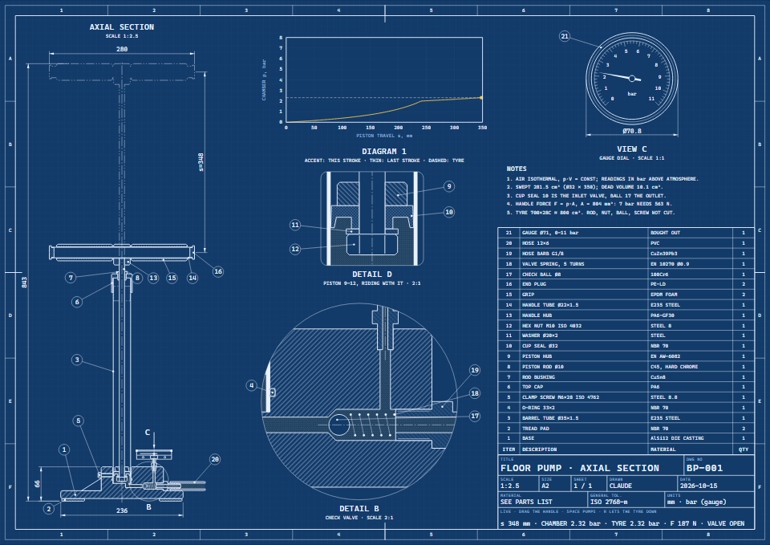

Floor pump
Bicycle floor pump in axial section
Positive-displacement compression through two one-way valves
Boyle's law in a barrel. The cup seal folds in on the upstroke because it is the inlet valve; the check ball lifts when the chamber passes tyre pressure because it is the outlet. The P–s diagram flattens the moment the valve opens.
Views and controls
- Axial section 1:2.5
- Detail B check valve 2:1
- Detail D piston 2:1
- View C gauge 1:1
- P–s diagram
Drag the handle · Space pumps · R lets the tyre down · S slow motion
Where it's useful
- Physics teaching: Boyle's law, dead volume, compression ratio
- Product documentation for pumps and compressors
- Explaining one-way valves and back-pressure